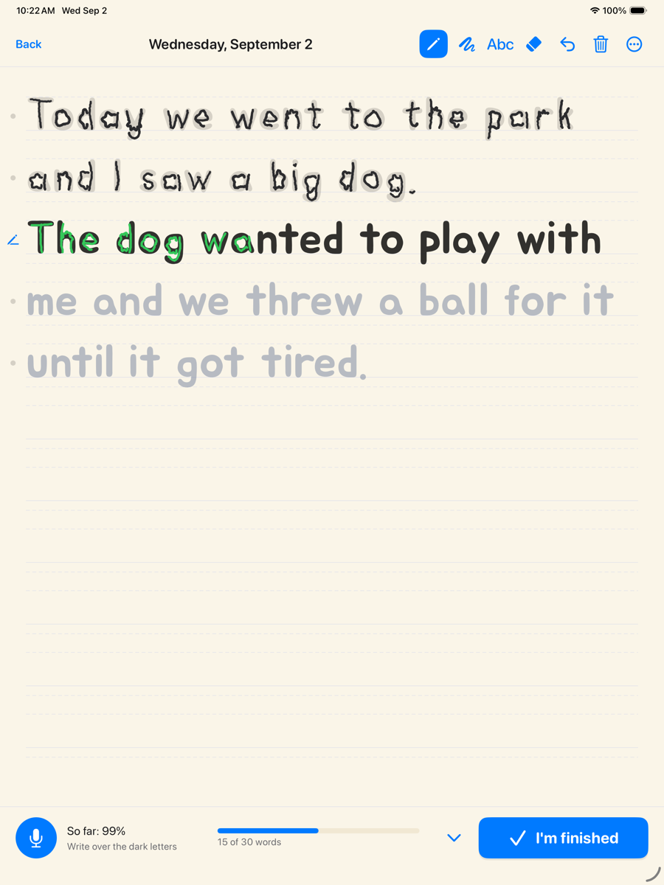

Handwritten Journal
The only handwriting app that keeps the page instead of the score.
Every letter-tracing app hands a child a word list. Handwritten Journal hands them their own sentence: the child says what happened today, it appears on a ruled page, and they write over it. The guide disappears under their ink, line by line, and the page joins a journal in their own handwriting. A year of days becomes a book.
- Grades as they write. Per-letter accuracy in green and red ink, stroke order judged, and a letter drawn backwards taught on the spot — during real writing, not in a drill.
- Keeps everything, shares nothing. No account, no analytics, no advertising, no server. Speech is recognised on the iPad and no audio is stored. App Store privacy label: Data Not Collected.
- A keepsake first. Every page is dated and kept; the whole journal exports as a PDF book.
- Independent, and free. Built by one developer, Matt Vorst. No ads, no account; everything in this version is included.

Facts
| Name | Handwritten Journal (home-screen name: Journal) |
|---|---|
| Platform | iPad, iOS 18 or later. Apple Pencil recommended; finger tracing optional. English |
| Ages | Roughly 5 to 8 — children who can speak in sentences and are learning to form their letters |
| Price | Free. No ads, no account, no subscription. Category: Education |
| Privacy | Data Not Collected. No network code. On-device speech recognition; no audio recorded |
| Availability | App Store, autumn 2026 (date to be confirmed) |
| Developer | Matt Vorst, independent developer |
| Press kit | handwrittenjournal.app/press — icon, screenshots, clip, boilerplate |
Where it sits
| Tracing apps | Kids' diaries | This | |
|---|---|---|---|
| Child's own speech is the content | — | — | Yes |
| Per-letter grading, live | Some | — | Yes |
| Stroke order taught mid-writing | Drills | — | Yes |
| Guide becomes the child's ink in place | — | — | Yes |
| Pages kept as a book | Reports | Yes | Yes |
| Nothing leaves the device | Varies | Varies | Yes |
Nearest neighbours: Writing Wizard, iTrace, Handwriting Tracing Practice. None keeps the child's page.
Boilerplate (50 words)
Handwritten Journal turns what a child says about their day into a ruled page they write over in their own hand. Ink is marked letter by letter as they write, stroke order is taught on the spot, and every finished page joins a journal that becomes a book in their handwriting. iPad only; nothing leaves the device.
What it is not
Not a curriculum, not a reading app, not social, not online, not cursive. It does not claim results in any number of weeks. It is a journal with a handwriting engine underneath, and it says so.
"Handwriting practice is dull. Journalling is not. If the sentence a child practises is one they wanted to say, practice stops being practice."
Screenshots: iPad 13-inch, 2064 × 2752
Icon: 1024 × 1024 PNG